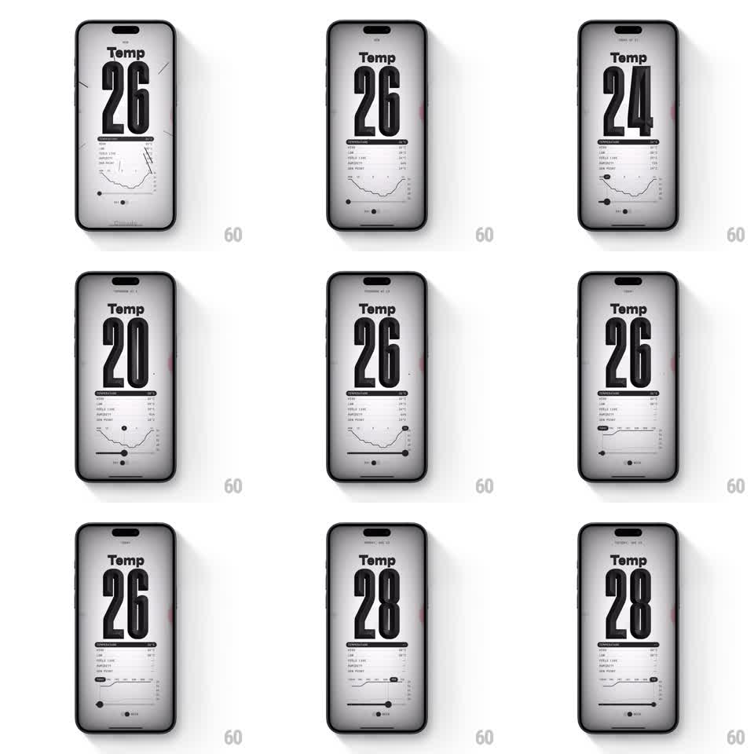

Media
Frame-by-frame

Rebuild this interaction 1:1: (Not Boring) Weather's Temp detail screen - a print-styled page where a bottom slider 3D-flips the giant temperature type and morphs the line graph below.

Rebuild this interaction 1:1: (Not Boring) Weather's Temp detail screen - a print-styled page where a bottom slider 3D-flips the giant temperature type and morphs the line graph below. ## Integration Integration: stack-agnostic spec - springs given as stiffness/damping, timed motions as duration + curve; map every value to your framework and animation library of choice. ## Scene Off-white paper-textured screen in a stark black-on-white print aesthetic: "Temp" label above towering condensed numerals (26), a divider rule, a stats list (wind, feels like, humidity, dew point), a line graph of the day's temperatures, and a bottom slider with a small readout. Sketchy scratch marks accent the corners. ## Motion spec Pattern: slider-driven typographic flip + graph morph. - Drag the bottom slider: the giant numerals flip like a 3D letterpress drum - each digit rotates on its horizontal axis, new value swinging in from above (220ms per digit, 40ms stagger, motion blur while fast). - The line graph morphs live: its path interpolates between hourly curves as you scrub, the active point dot gliding along the line and its value label tracking the dot (spring ~400/28). - The stats list values tick over with a quick vertical roll (120ms) when they change. - The page itself subtly tilts toward the drag direction (rotateZ +-0.5deg) like paper being tugged. - Release: slider springs to the nearest hour (~360/26); graph and numerals settle together. ## Calibration - Everything is black ink on paper - no color; the tactility comes from motion, not hue. - The graph morph must stay a valid single-stroke line at every intermediate state - no self-crossing glitches. ## Reduced motion Values crossfade; graph redraws without morph. ## Don't miss - Numerals are ultra-condensed and fill the width - the typography IS the interface. - Keep the scratch/print texture static; only data moves.